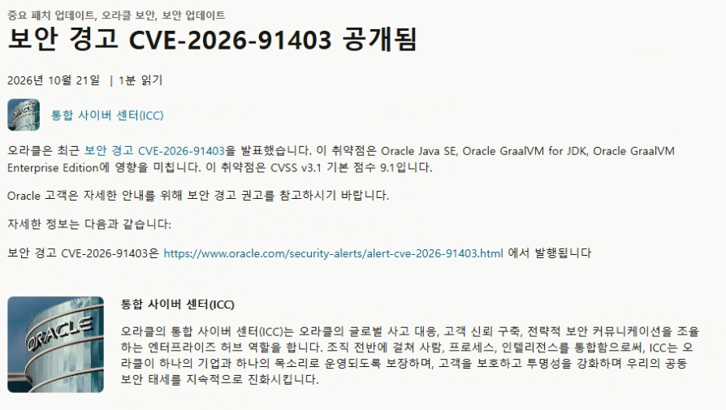
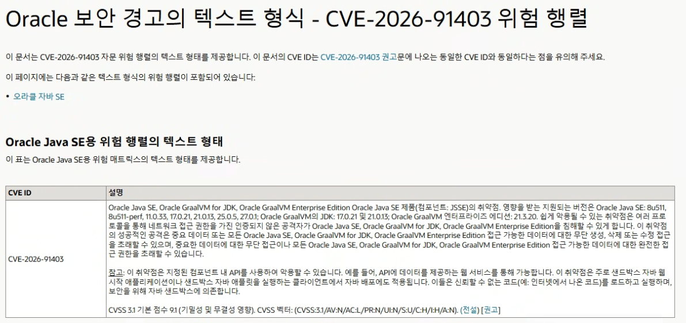

금일자 기준 php, node를 이어 java도 취약점(CVE-2026-91403) 추가됨
점수: CVSS 3.1 기준 9.1 매우심각
대상:
Oracle Java SE (8u511, 8u511-perf, 11.0.33, 17.0.21, 21.0.13, 25.0.5, 27.0.1 등)
Oracle GraalVM for JDK (17.0.21, 21.0.13 등)
Oracle GraalVM Enterprise Edition (21.3.20 등)
원인:
나도 소식 보고 바로 올려보는거라 정확히 확인은 못했지만 소식을 종합해봤어 틀렸으면 미안해
중간 인증기관CA에서 키가 노출된 인증서 8개가 문제라고 하는듯
해당 취약점은 여러 프로토콜을 통해 공격에 사용될 시 중요 데이터 또는 모든 Oracle Java SE, Oracle GraalVM for JDK, Oracle GraalVM Enterprise Edition 접근 가능한 데이터에 대한 무단 생성, 삭제 또는 수정 접근을 초래할 수 있으며, 중요한 데이터에 대한 무단 접근이나 모든 Oracle Java SE, Oracle GraalVM for JDK, Oracle GraalVM Enterprise Edition 접근 가능한 데이터에 대한 완전한 접근 권한을 초래할 수 있다는듯.
이렇게 글써본적이 없어서 두서가 없네 미안해 개붕이들아 그래도 바로 알리는게 도움이되지않을까 했어
나도 오늘 node 보안조치 업뎃하고 왔는데 java도 털려있길래 무슨일인가 싶었음
출처
https://blogs.oracle.com/security/security-alert-cve-2026-91403-released
https://www.oracle.com/security-alerts/alert-cve-2026-91403.html
https://www.oracle.com/security-alerts/cve-2026-91403verbose.html#JAVA
바쁜 개붕이들을 위한 3줄 요약
1. php, node에 이어 Java도 털림
2. 원인은 키가 노출된 인증서 때문
3. Java쓰는 개붕이들 화이팅


지피티 클로드 네이놈들... 그만 들쑤시라구우웃